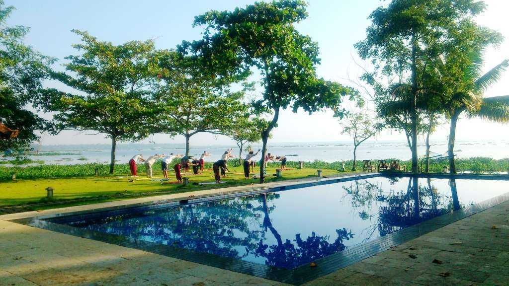

Malapuram
Malappuram (also Malapuram) (About this soundpronunciation) is a city[3] in the Indian state of Kerala, spread over an area of 33.61 km2 (12.98 sq mi). The first municipality in the district formed in 1969, Malappuram serves as the administrative headquarters of Malappuram district. Divided into 40 electoral wards, the city has a population density of 2,083 per square kilometre (5,390 per square mile). As per the 2011 census Malappuram Urban Agglomeration is the fourth largest urban agglomeration in Kerala state with a total population of 1,698,645.[4] Malappuram is situated 54 km southeast of Calicut and 90 km northwest of Palakkad.[5]
Shanthitheeram park
Shanthitheeram Park, or the Shanthitheeram Riverside Park to be specific, is known to be one of the most famous Malappuram Tourist Places and is a great spot to hangout for the locals, and tourists, alike. Located on the banks of the river Kadalundi, the park has a number of activities to offer. You can be a part of the excitement of boating, that is available as both pedal boating and riding on a coracle (bowl boat), or as the locals call it, Kuttavanchi. You can also take up off-road ATV riding and much more while visiting here.
kootakunnu

Kottakkunnu, Known as Marine Drive of Malappuram is a hill garden. Kottakkunnu park contains an Open Air theater, Lalitha Kala Academy Art gallery, a water theme park, Adventure Park, Kids traffic park, Balloon Park, 16D Cinema. There is Water fountain and Laser show on every weekends and on festivals like Eid, Onam, New year eve etc. At Kottakkunnu one can see traces of the first fort built by the Zamorins. This tourism destination turned historic hill attracts lakhs of people per annum. This scenic table-top location is at the crest of the Cantonment Hill near the District Collectorate in the heart of Malappuram city and 51 km from Kozhikode,12 km from Kottakkal, 25 km from Calicut International Airport, 17 km from Angadipuram railway station and 29 km from Tirur railway station. Visitors are allowed up to 9pm.[clarification needed] KSRTC Bus station located adjacent at Up Hill is the nearest bus station.